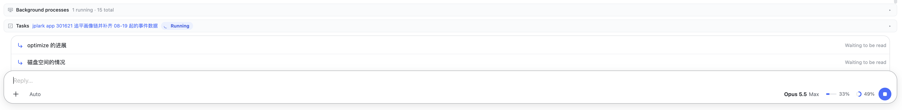
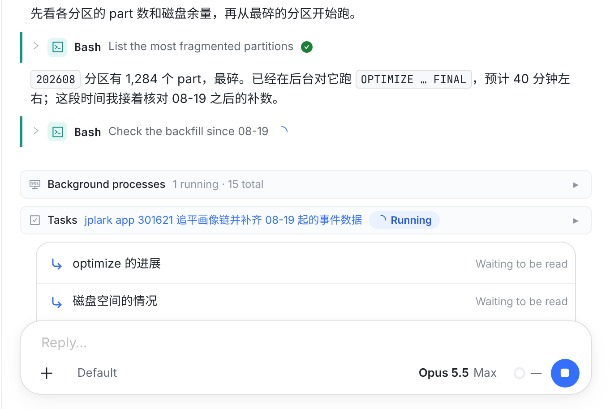
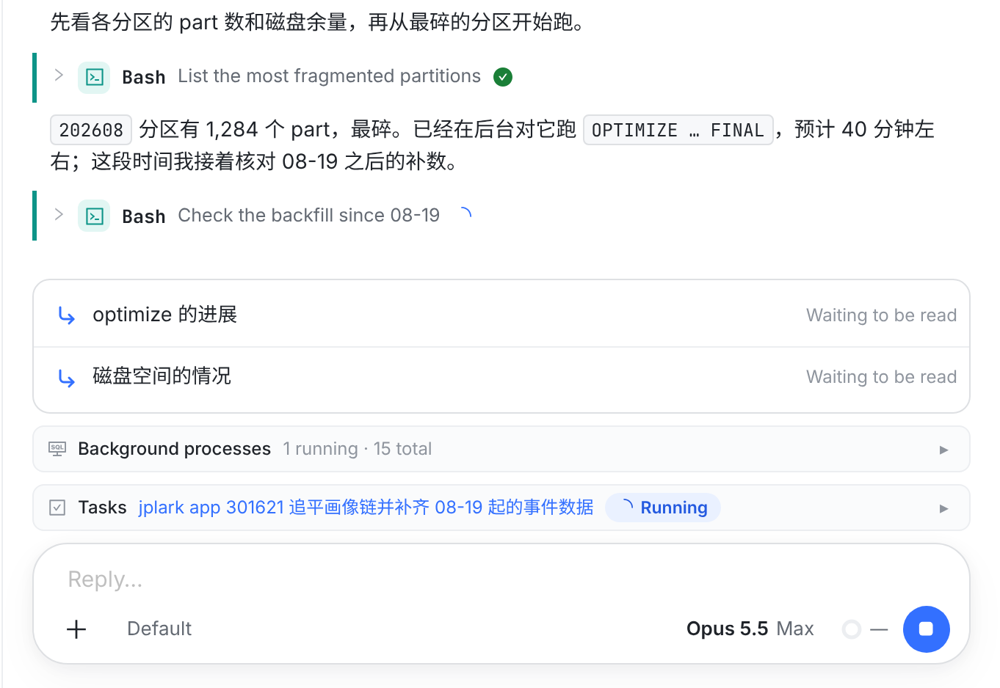
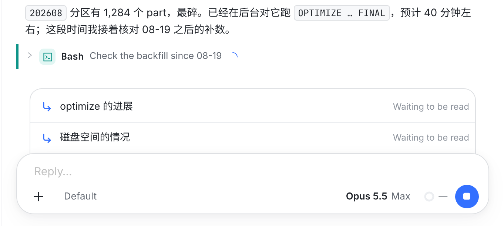
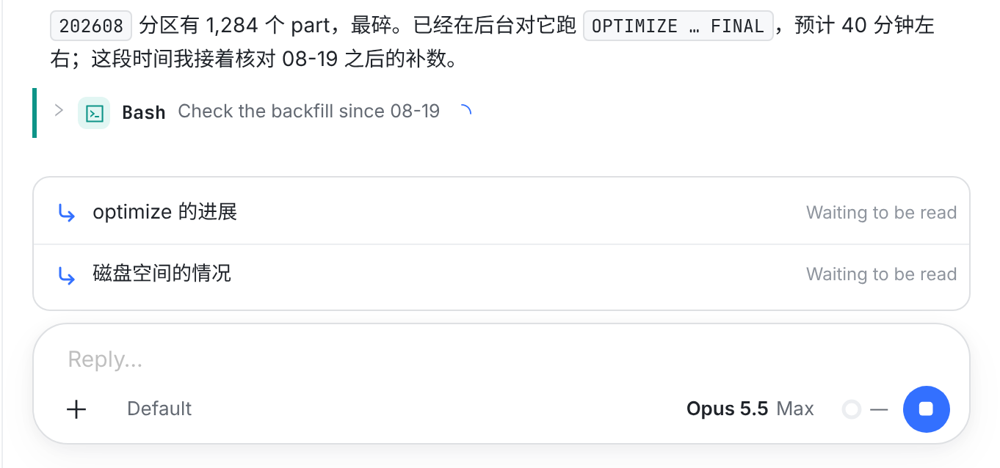
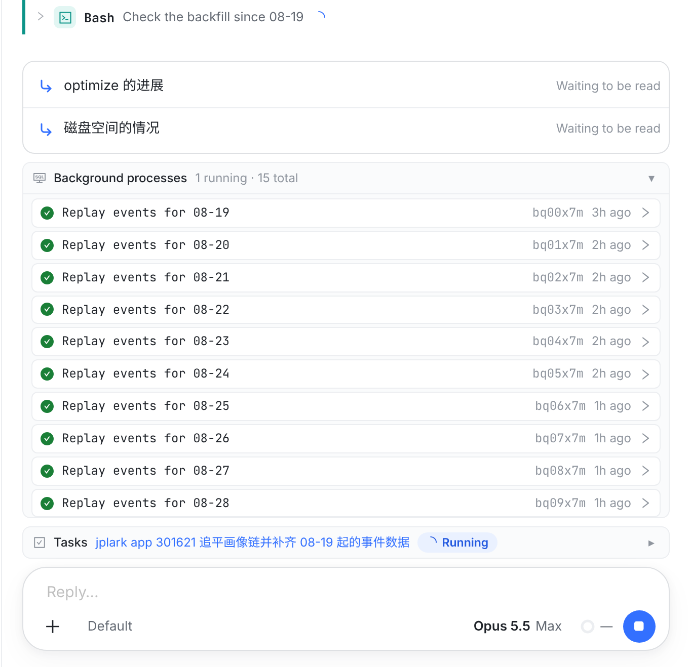
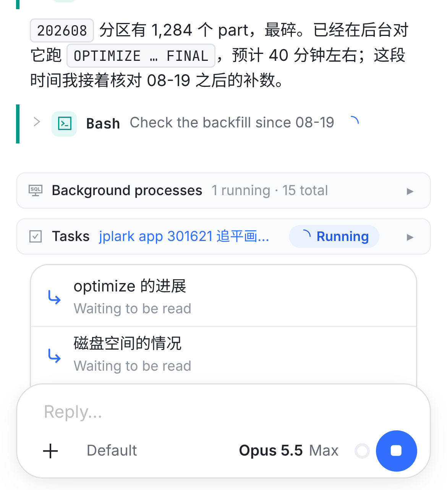
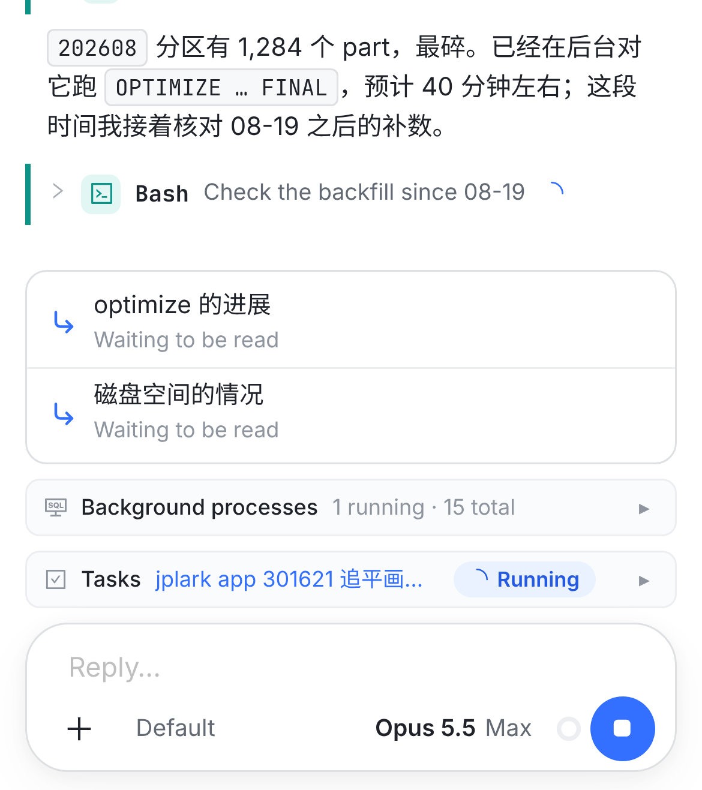
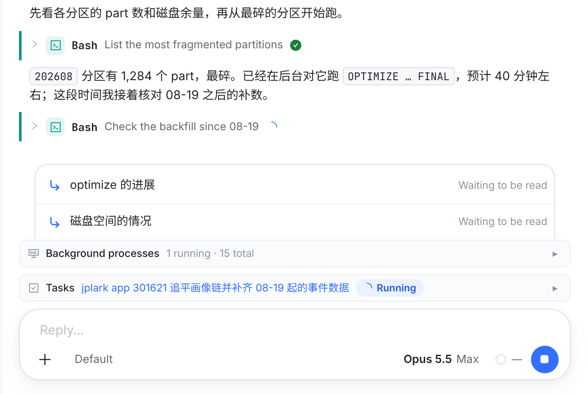
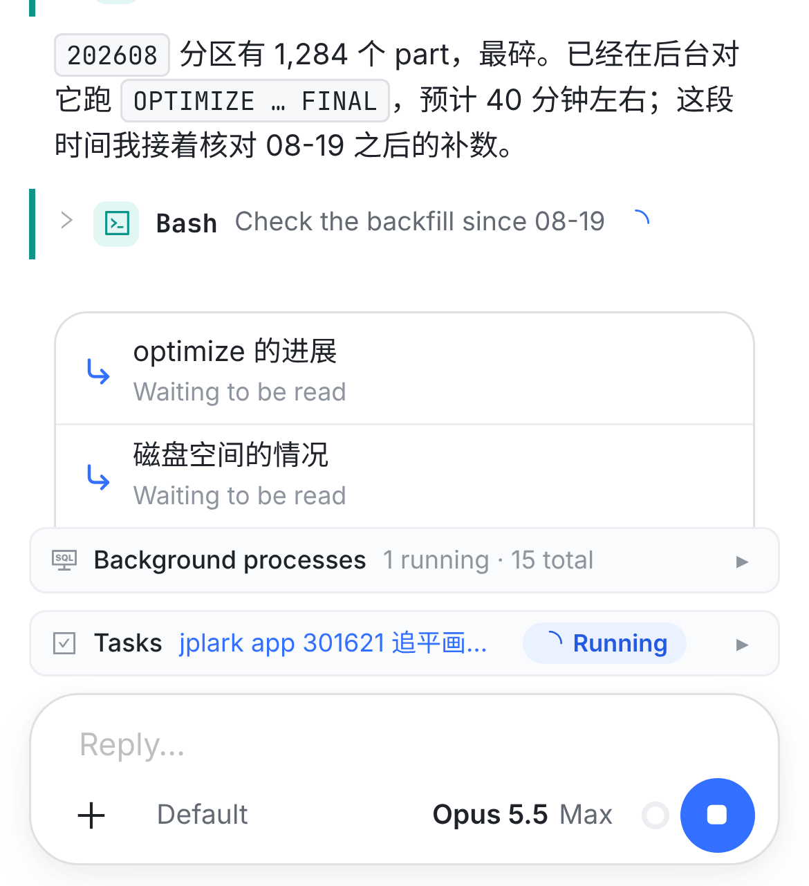

Web 会话页，输入框上方那一组。你说「消息排队在停车条上面」：现在还没被读的消息（托盘）压在输入框上沿后面，
停车条（Watching、Background processes、Tasks、分支条）在它上面；改后托盘排到这一组最上面，紧接对话，停车条贴着输入框。
已定（2026-10-28）：按推荐落地，② 独立卡片，Web、iOS / macOS、Android 一起改。
参考你的截图

下面每张都是真实页面：本分支的 Web 代码在 Chromium 里渲染（桌面 1280 宽、2x；手机 390 宽、3x），数据照你的截图搭（同一个任务、1 running · 15 total、两条 Waiting to be read）。 「现在」是 main e6a9e479c；「效果图」是同一棵树把这次的改动写成代码后渲染的（WorkspaceView.tsx 挪一处、index.css 改托盘的样子），不是手画的。虚线框是后加的。落地后的 Web 代码渲染出来，和 ② ③ ④ ⑥ 的效果图逐像素一致。
桌面 Web你截图里那一刻：回合在跑，中途发了两条
现在① 托盘压在输入框后面

效果图 · 推荐② 托盘在停车条上面，紧接对话

① 托盘压在输入框上沿后面：左右各收进 18px，只有上面两个圆角，底边藏进输入框 22px，和输入框读成一叠。停车条在它上面，离对话更近。
② 托盘排到最上面，紧接对话，从上往下就是时间顺序：对话 → 你刚发、模型还没读的话 → 这个会话在跑的东西（后台进程、建的任务、分支）→ 输入框。 托盘不再压在输入框后面，改成一张独立卡片：和停车条同宽，白底（同现在），12px 圆角，下面隔 8px。iOS / macOS 的托盘本来就是这样一张独立卡片（12pt 圆角，下面隔 8pt）。 行一点没变：↳、文字、Waiting to be read、Steer、撤回。
情况改后的两种情况
现在③ 停车条空着

效果图③ 停车条空着

③ 没有后台进程、没建任务、没有分支条时，托盘下面直接就是输入框。现在它压在输入框后面；改后还是那张独立卡片，隔 8px。 托盘只有一个样子，不跟着下面是什么变。
效果图④ 点开 Background processes

④ 停车条里的一张点开了（这里是 Background processes 的 15 个进程，最高 320px，里面滚动）：列表在托盘下面展开，托盘留在最上面，贴着对话，被往上推。
现在点开时正相反：托盘留在输入框上，列表在它上面展开。
手机 Web同一刻
现在⑤

效果图⑥

⑥ 手机上同样的顺序。托盘和停车条同宽（现在左右各收进 12px）；每行的状态在文字下面、按钮 36px 见方，都不变。
iPhone 和 Android 的 App 打字时会收起停车条（已有），托盘不收。所以打字的时候托盘仍然直接在输入框上面，和现在一样；不打字时才是 ⑥ 的顺序。
另一个样子 · 不推荐⑦ 照旧「压在后面」，换成压在停车条第一张后面
⑦ 桌面

⑦ 手机

保留 10-16 定的样子：只有上圆角 16px、左右收进、底边藏进下面那张 22px，只是从输入框后面换到停车条第一张后面。
不推荐：下面那张会换（Watching、Background processes、Tasks、分支条，都没有时是输入框），压在一条 30px 高的灰条后面，像夹进去的一张纸；也和 iOS / macOS 的独立卡片对不上。
规则改了什么，没改什么
| 现在 | 改后 | |
|---|---|---|
| 位置 | 输入框上方这一组的最下面，压在输入框后面 | 这一组的最上面，紧接对话。停车条和其他提示（托管 runner 的状态、回复谁、任务运行交接、provider 说明）之间的顺序不变 |
| 样子 | 左右收进 18px（手机 12px），只有上圆角 16px，底边藏进输入框 22px | 独立卡片：和停车条同宽，白底，1px 边，12px 圆角，下面隔 8px |
| 行 | ↳ 插进当前回合 / ≡ 排到下一轮；文字一行，点开看全文；状态；Steer；撤回（文字回到输入框）；Cursor 会话的说明。不变 | |
| 好几条 | 按发出的顺序往下排，最新的在最下面；超过 4 行在托盘里滚动。不变 | |
| App 打字时 | 停车条收起，托盘不收，所以打字时托盘贴着输入框。不变 | |
<PendingTray> 挪成 .workspace-composer 的第一个；index.css 的 .pending-tray 去掉负 margin、上圆角和 22px 垫底，改成独立卡片，删掉手机的 12px 内缩。上面的效果图就是这两处渲染出来的。PendingTrayView 挪成 ComposerBand 的第一个；样子不用改。PendingTrayCard 现在画在 SessionComposer 里、输入框正上方；挪到 SessionReader 的停车条上面，去掉 24dp 内缩，和停车条同宽。